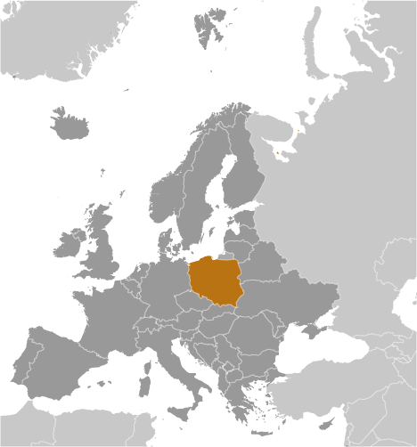
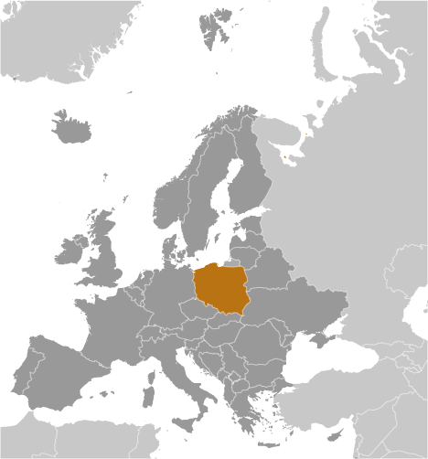

Europe :: POLAND
Introduction :: POLAND
-
Poland's history as a state began near the middle of the 10th century. By the mid-16th century, the Polish-Lithuanian Commonwealth ruled a vast tract of land in Central and Eastern Europe. During the 18th century, internal disorders weakened the nation, and in a series of agreements between 1772 and 1795, Russia, Prussia, and Austria partitioned Poland among themselves. Poland regained its independence in 1918 only to be overrun by Germany and the Soviet Union in World War II. It became a Soviet satellite state following the war, but its government was comparatively tolerant and progressive. Labor turmoil in 1980 led to the formation of the independent trade union "Solidarity" that over time became a political force with over 10 million members. Free elections in 1989 and 1990 won Solidarity control of the parliament and the presidency, bringing the communist era to a close. A "shock therapy" program during the early 1990s enabled the country to transform its economy into one of the most robust in Central Europe. Poland joined NATO in 1999 and the EU in 2004. With its transformation to a democratic, market-oriented country largely completed and with large investments in defense, energy, and other infrastructure, Poland is an increasingly active member of Euro-Atlantic organizations.
Geography :: POLAND
-
Central Europe, east of Germany52 00 N, 20 00 EEuropetotal: 312,685 sq kmland: 304,255 sq kmwater: 8,430 sq kmcountry comparison to the world: 71about twice the size of Georgia; slightly smaller than New Mexicototal: 3,071 kmborder countries (7): Belarus 418 km, Czech Republic 796 km, Germany 467 km, Lithuania 104 km, Russia (Kaliningrad Oblast) 210 km, Slovakia 541 km, Ukraine 535 km440 kmterritorial sea: 12 nmexclusive economic zone: defined by international treatiestemperate with cold, cloudy, moderately severe winters with frequent precipitation; mild summers with frequent showers and thundershowersmostly flat plain; mountains along southern bordermean elevation: 173 melevation extremes: lowest point: near Raczki Elblaskie -2 mhighest point: Rysy 2,499 mcoal, sulfur, copper, natural gas, silver, lead, salt, amber, arable landagricultural land: 48.2%arable land 36.2%; permanent crops 1.3%; permanent pasture 10.7%forest: 30.6%other: 21.2% (2011 est.)970 sq km (2012)population concentrated in the southern area around Krakow and the central area around Warsaw and Lodz, with an extension to the northern coastal city of Gdanskfloodingdecreased emphasis on heavy industry and increased environmental concern by post-communist governments has improved environment; air pollution remains serious because of emissions from coal-fired power plants and the resulting acid rain has caused forest damage; water pollution from industrial and municipal sources is also a problem, as is disposal of hazardous wastesparty to: Air Pollution, Antarctic-Environmental Protocol, Antarctic-Marine Living Resources, Antarctic Seals, Antarctic Treaty, Biodiversity, Climate Change, Climate Change-Kyoto Protocol, Desertification, Endangered Species, Environmental Modification, Hazardous Wastes, Law of the Sea, Marine Dumping, Ozone Layer Protection, Ship Pollution, Wetlandssigned, but not ratified: Air Pollution-Nitrogen Oxides, Air Pollution-Persistent Organic Pollutants, Air Pollution-Sulfur 94historically, an area of conflict because of flat terrain and the lack of natural barriers on the North European Plain
People and Society :: POLAND
-
38,476,269 (July 2017 est.)country comparison to the world: 36noun: Pole(s)adjective: PolishPolish 96.9%, Silesian 1.1%, German 0.2%, Ukrainian 0.1%, other and unspecified 1.7%note: represents ethnicity declared first (2011 est.)Polish (official) 98.2%, Silesian 1.4%, other 1.1%, unspecified 1.3%note: data represents the language spoken at home; shares sum to more than 100% because some respondents gave more than one answer on the census; Poland ratified the European Charter for Regional or Minority Languages in 2009 recognizing Kashub as a regional language, Czech, Hebrew, Yiddish, Belarusian, Lithuanian, German, Armenian, Russian, Slovak, and Ukrainian as national minority languages, and Karaim, Lemko, Romani (Polska Roma and Bergitka Roma), and Tatar as ethnic minority languages (2011 est.)Catholic 87.2% (includes Roman Catholic 86.9% and Greek Catholic, Armenian Catholic, and Byzantine-Slavic Catholic .3%), Orthodox 1.3% (almost all are Polish Autocephalous Orthodox), Protestant 0.4% (mainly Augsburg Evangelical and Pentacostal), other 0.4% (includes Jehovah's Witness, Buddhist, Hare Krishna, Gaudiya Vaishnavism, Muslim, Jewish, Mormon), unspecified 10.8% (2012 est.)0-14 years: 14.76% (male 2,919,353/female 2,757,923)15-24 years: 10.7% (male 2,113,358/female 2,003,033)25-54 years: 43.48% (male 8,447,418/female 8,283,757)55-64 years: 14.21% (male 2,586,097/female 2,880,031)65 years and over: 16.86% (male 2,560,847/female 3,924,452) (2017 est.)total dependency ratio: 43.9youth dependency ratio: 21.4elderly dependency ratio: 22.5potential support ratio: 4.5 (2015 est.)total: 40.7 yearsmale: 39 yearsfemale: 42.4 years (2017 est.)country comparison to the world: 46-0.13% (2017 est.)country comparison to the world: 2079.5 births/1,000 population (2017 est.)country comparison to the world: 20210.4 deaths/1,000 population (2017 est.)country comparison to the world: 33-0.4 migrant(s)/1,000 population (2017 est.)country comparison to the world: 120population concentrated in the southern area around Krakow and the central area around Warsaw and Lodz, with an extension to the northern coastal city of Gdanskurban population: 60.5% of total population (2017)rate of urbanization: 0.02% annual rate of change (2015-20 est.)WARSAW (capital) 1.722 million; Krakow 760,000 (2015)at birth: 1.06 male(s)/female0-14 years: 1.06 male(s)/female15-24 years: 1.05 male(s)/female25-54 years: 1.02 male(s)/female55-64 years: 0.9 male(s)/female65 years and over: 0.64 male(s)/femaletotal population: 0.94 male(s)/female (2016 est.)27.4 years (2014 est.)3 deaths/100,000 live births (2015 est.)country comparison to the world: 182total: 4.4 deaths/1,000 live birthsmale: 4.8 deaths/1,000 live birthsfemale: 4 deaths/1,000 live births (2017 est.)country comparison to the world: 182total population: 77.8 yearsmale: 73.9 yearsfemale: 81.8 years (2017 est.)country comparison to the world: 671.35 children born/woman (2017 est.)country comparison to the world: 2156.4% of GDP (2014)country comparison to the world: 972.27 physicians/1,000 population (2014)6.5 beds/1,000 population (2011)improved:urban: 99.3% of populationrural: 96.9% of populationtotal: 98.3% of populationunimproved:urban: 0.7% of populationrural: 3.1% of populationtotal: 1.7% of population (2015 est.)improved:urban: 97.5% of populationrural: 96.7% of populationtotal: 97.2% of populationunimproved:urban: 2.5% of populationrural: 3.3% of populationtotal: 2.8% of population (2015 est.)NANANAdegree of risk: intermediatevectorborne disease: tickborne encephalitis (2016)23.1% (2016)country comparison to the world: 694.9% of GDP (2013)country comparison to the world: 65definition: age 15 and over can read and writetotal population: 99.8%male: 99.9%female: 99.7% (2015 est.)total: 16 yearsmale: 16 yearsfemale: 17 years (2013)total: 20.8%male: 20.7%female: 20.9% (2015 est.)country comparison to the world: 34
Government :: POLAND
-
conventional long form: Republic of Polandconventional short form: Polandlocal long form: Rzeczpospolita Polskalocal short form: Polskaetymology: name derives from the Polanians, a west Slavic tribe that united several surrounding Slavic groups (9th-10th centuries A.D.) and who passed on their name to the country; the name of the tribe likely comes from the Slavic "pole" (field or plain), indicating the flat nature of their countryparliamentary republicname: Warsawgeographic coordinates: 52 15 N, 21 00 Etime difference: UTC+1 (6 hours ahead of Washington, DC, during Standard Time)daylight saving time: +1hr, begins last Sunday in March; ends last Sunday in October16 provinces (wojewodztwa, singular - wojewodztwo); Dolnoslaskie (Lower Silesia), Kujawsko-Pomorskie (Kuyavia-Pomerania), Lodzkie (Lodz), Lubelskie (Lublin), Lubuskie (Lubusz), Malopolskie (Lesser Poland), Mazowieckie (Masovia), Opolskie (Opole), Podkarpackie (Subcarpathia), Podlaskie, Pomorskie (Pomerania), Slaskie (Silesia), Swietokrzyskie (Holy Cross), Warminsko-Mazurskie (Warmia-Masuria), Wielkopolskie (Greater Poland), Zachodniopomorskie (West Pomerania)11 November 1918 (republic proclaimed); notable earlier dates: 966 (adoption of Christianity, traditional founding date), 1 July 1569 (Polish-Lithuanian Commonwealth created)Constitution Day, 3 May (1791)history: several previous; latest adopted 2 April 1997, approved by referendum 25 May 1997, effective 17 October 1997amendments: proposed by at least one-fifth of Sejm deputies, by the Senate, or by the president of the republic; passage requires at least two-thirds majority vote in the Sejm and absolute majority vote in the Senate; amendments to articles relating to sovereignty, personal freedoms, and constitutional amendment procedures also require passage by majority vote in a referendum; amended 2006, 2009, 2015 (2016)civil law system; judicial review of legislative, administrative, and other governmental acts; constitutional law rulings of the Constitutional Tribunal are finalaccepts compulsory ICJ jurisdiction with reservations; accepts ICCt jurisdictioncitizenship by birth: nocitizenship by descent only: both parents must be citizens of Polanddual citizenship recognized: noresidency requirement for naturalization: 5 years18 years of age; universalchief of state: President Andrzej DUDA (since 6 August 2015)head of government: Prime Minister Beata SZYDLO (since 16 November 2015); Deputy Prime Minister and Minister of Culture and National Heritage Piotr GLINSKI (since 16 November 2015), Deputy Prime Minister and Minister of Science and Higher Education Jaroslaw GOWIN (since 16 November 2015), and Deputy Prime Minister and Minister of Development Mateusz MORAWIECKI (since 16 November 2015)cabinet: Council of Ministers proposed by the prime minister, appointed by the president, and approved by the Sejmelections/appointments: president directly elected by absolute majority popular vote in 2 rounds if needed for a 5-year term (eligible for a second term); election last held on 10 and 24 May 2015 (next to be held in 2020); prime minister, deputy prime ministers, and Council of Ministers appointed by the president and confirmed by the Sejmelection results: Andrzej DUDA elected president in second round; percent of vote in runoff - Andrzej DUDA (independent) 51.5%, Bronislaw KOMOROWSKI (independent) 48.5%description: bicameral legislature consists of the Senate or Senat (100 seats; members directly elected in single-seat constituencies by simple majority vote to serve 4-year terms) and the Sejm (460 seats; members directly elected in multi-seat constituencies by proportional representation vote to serve 4-year terms); note - the designation National Assembly or Zgromadzenie Narodowe is only used on those rare occasions when the 2 houses meet jointlynote: the German minority is exempt from the 5% threshold requirement for seats to the Sejmelections: Senate - last held on 25 October 2015 (next to be held in October 2019); Sejm - last held on 25 October 2015 (next to be held in October 2019)election results: Senate - percent of vote by party - NA; seats by party - PiS 61, PO 34, PSL 1, independent 4; Sejm - percent of vote by party - PiS 37.6%, PO 24.1%, K15 8.8%, N 7.6%, PSL 5.1% other 16.8%; seats by party - PiS 235, PO 138, K15 42, N 28, PSL 16, German minority 1highest court(s): Supreme Court or Sad Najwyzszy (consists of the president of the Supreme Court and 116 judges organized in criminal, civil, labor and social insurance, and military chambers)judge selection and term of office: president of the Supreme Court nominated by the General Assembly of the Supreme Court and selected by the president of Poland; other judges nominated by the 25-member National Judiciary Council, and appointed by the president of Poland; judges appointed until retirement, usually at age 65, but tenure can be extendedsubordinate courts: Constitutional Tribunal; State Tribunal; administrative courts; regional and appellate courts subdivided into military, civil, criminal, labor, and family courtsCivic Platform or PO [Grzegorz SCHETYNA]Democratic Left Alliance or SLD [Wlodzimierz CZARZASTY]German Minority of Lower Silesia or MNSO [Ryszard GALLA]Kukiz 15 or K15 [Pawel KUKIZ]Law and Justice or PiS [Jaroslaw KACZYNSKI]Liberty (formerly the Coalition for the Renewal of the Republic-Liberty and Hope or KORWiN) [Janusz KORWIN-MIKKE]Nowoczesna ("Modern") or N [Ryszard PETRU]Polish People's Party or PSL [Wladyslaw KOSINIAK-KAMYSZ]Razem (Together) [collective leadership]All Poland Trade Union Alliance or OPZZ [Jan GUZ] (trade union)Independent Self-Governing Trade Union or Solidarity [Piotr DUDA]Roman Catholic Church [Archbishop Wojciech POLAK, Archbishop Stanislaw GADECKI]Arctic Council (observer), Australia Group, BIS, BSEC (observer), CBSS, CD, CE, CEI, CERN, EAPC, EBRD, ECB, EIB, ESA, EU, FAO, IAEA, IBRD, ICAO, ICC (national committees), ICCt, ICRM, IDA, IEA, IFC, IFRCS, IHO, ILO, IMF, IMO, IMSO, Interpol, IOC, IOM, IPU, ISO, ITSO, ITU, ITUC (NGOs), MIGA, MONUSCO, NATO, NEA, NSG, OAS (observer), OECD, OIF (observer), OPCW, OSCE, PCA, Schengen Convention, UN, UNCTAD, UNESCO, UNHCR, UNIDO, UNMIL, UNMISS, UNOCI, UNWTO, UPU, WCO, WFTU (NGOs), WHO, WIPO, WMO, WTO, ZCchief of mission: Ambassador Piotr Antoni WILCZEK (since 18 January 2017)chancery: 2640 16th Street NW, Washington, DC 20009telephone: [1] (202) 499-1700FAX: [1] (202) 328-6271consulate(s) general: Chicago, Los Angeles, New Yorkchief of mission: Ambassador Paul Wayne JONES (since 7 October 2015)embassy: Aleje Ujazdowskie 29/31 00-540 Warsawmailing address: American Embassy Warsaw, US Department of State, Washington, DC 20521-5010 (pouch)telephone: [48] (22) 504-2000FAX: [48] (22) 504-2688consulate(s) general: Krakowtwo equal horizontal bands of white (top) and red; colors derive from the Polish emblem - a white eagle on a red fieldnote: similar to the flags of Indonesia and Monaco which are red (top) and whitewhite eagle; national colors: white, redname: "Mazurek Dabrowskiego" (Dabrowski's Mazurka)lyrics/music: Jozef WYBICKI/traditionalnote: adopted 1927; the anthem, commonly known as "Jeszcze Polska nie zginela" (Poland Has Not Yet Perished), was written in 1797; the lyrics resonate strongly with Poles because they reflect the numerous occasions in which the nation's lands have been occupied
Economy :: POLAND
-
Poland has the sixth-largest economy in the EU and has long had a reputation as a business-friendly country with largely sound macroeconomic policies. Since 1990, Poland has pursued a policy of economic liberalization. During the 2008-09 economic slowdown Poland was the only EU country to avoid a recession, in part because of the government’s loose fiscal policy combined with a commitment to rein in spending in the medium-term. However, since 2015 Warsaw’s prioritization of spending on social welfare programs has prompted investors to decrease Poland’s economic growth projections for the next few years.The Polish economy performed well during the 2014-16 period, with the real GDP growth rate exceeding 3%, in part because of the government’s fiscal prudence. Poland’s economic growth in 2017 is projected by some credit rating agencies to slow, however, because of Poland’s government’s increase in social spending since 2015, including the provision of cash transfers for low income families, families with more than one child, and the reduction of the retirement age which will take effect in October 2017. The government has tried to introduce new taxes and boost tax compliance to offset the costs of the social spending programs and relieve upward pressure on the budget deficit. Some credit ratings agencies estimate that Poland will exceed the EU’s 3%-of-GDP limit on budget deficits, possibly impacting its access to future EU funds.Poland faces several systemic challenges, which include addressing some of the remaining deficiencies in its road and rail infrastructure, business environment, rigid labor code, commercial court system, government red tape, and burdensome tax system, especially for entrepreneurs. Additional long-term challenges include diversifying Poland’s energy mix, strengthening investments in innovation, research, and development, as well as stemming the outflow of educated young Poles to other EU member states, especially in light of a coming demographic contraction due to emigration, persistently low fertility rates, and the aging of the Solidarity-era baby boom generation.$1.051 trillion (2016 est.)$1.011 trillion (2015 est.)$963.1 billion (2014 est.)note: data are in 2016 dollarscountry comparison to the world: 25$469.3 billion (2016 est.)2.6% (2016 est.)3.9% (2015 est.)3.3% (2014 est.)country comparison to the world: 104$27,700 (2016 est.)$27,000 (2015 est.)$25,900 (2014 est.)note: data are in 2016 dollarscountry comparison to the world: 6719.4% of GDP (2016 est.)19.9% of GDP (2015 est.)18.3% of GDP (2014 est.)country comparison to the world: 100household consumption: 58.6%government consumption: 17.9%investment in fixed capital: 18.1%investment in inventories: 1.5%exports of goods and services: 52.3%imports of goods and services: -48.4% (2016 est.)agriculture: 2.4%industry: 40.2%services: 64.2% (2016 est.)potatoes, fruits, vegetables, wheat; poultry, eggs, pork, dairymachine building, iron and steel, coal mining, chemicals, shipbuilding, food processing, glass, beverages, textiles-0.4% (2016 est.)country comparison to the world: 16217.64 million (2016 est.)country comparison to the world: 37agriculture: 11.5%industry: 30.4%services: 57.6% (2015)6.2% (2016 est.)10.5% (2015 est.)country comparison to the world: 11717.6% (2015 est.)lowest 10%: 3%highest 10%: 23.9% (2015 est.)30.8 (2015)33.7 (2008)country comparison to the world: 122revenues: $79.75 billionexpenditures: $91.45 billion (2016 est.)17.1% of GDP (2016 est.)country comparison to the world: 174-2.5% of GDP (2016 est.)country comparison to the world: 10148.4% of GDP (2016 est.)44.7% of GDP (2015 est.)note: data cover general government debt, and includes debt instruments issued (or owned) by government entities other than the treasury; the data include treasury debt held by foreign entities, the data include subnational entities, as well as intra-governmental debt; intra-governmental debt consists of treasury borrowings from surpluses in the social funds, such as for retirement, medical care, and unemployment; debt instruments for the social funds are not sold at public auctionscountry comparison to the world: 101calendar year-0.6% (2016 est.)-0.9% (2015 est.)country comparison to the world: 231.5% (31 December 2016)2% (31 December 2015)country comparison to the world: 1224.74% (31 December 2016 est.)4.92% (31 December 2015 est.)country comparison to the world: 147$195.1 billion (31 December 2016 est.)$177.4 billion (31 December 2015 est.)country comparison to the world: 24$300.6 billion (31 December 2016 est.)$293.6 billion (31 December 2015 est.)country comparison to the world: 33$336.7 billion (31 December 2016 est.)$337.4 billion (31 December 2015 est.)country comparison to the world: 34$261.5 billion (31 December 2016 est.)$277.4 billion (31 December 2015 est.)$351.7 billion (31 December 2014 est.)country comparison to the world: 30$-959 million (2016 est.)$-2.949 billion (2015 est.)country comparison to the world: 121$195.7 billion (2016 est.)$191.1 billion (2015 est.)country comparison to the world: 24machinery and transport equipment 37.8%, intermediate manufactured goods 23.7%, miscellaneous manufactured goods 17.1%, food and live animals 7.6% (2012 est.)Germany 27.3%, UK 6.6%, Czech Republic 6.6%, France 5.4%, Italy 4.8%, Netherlands 4.5% (2016)$193.6 billion (2016 est.)$188.6 billion (2015 est.)country comparison to the world: 22machinery and transport equipment 38%, intermediate manufactured goods 21%, chemicals 15%, minerals, fuels, lubricants, and related materials 9% (2011 est.)Germany 28.3%, China 7.9%, Netherlands 6%, Russia 5.8%, Italy 5.3%, France 4.2%, Czech Republic 4.1% (2016)$114.4 billion (31 December 2016 est.)$94.91 billion (31 December 2015 est.)country comparison to the world: 23$347.8 billion (31 December 2016 est.)$330.1 billion (31 December 2015 est.)country comparison to the world: 32$224.5 billion (31 December 2016 est.)$223 billion (31 December 2015 est.)country comparison to the world: 27$64.52 billion (31 December 2016 est.)$61.39 billion (31 December 2015 est.)country comparison to the world: 39zlotych (PLN) per US dollar -3.9459 (2016 est.)3.9459 (2015 est.)3.7721 (2014 est.)3.1538 (2013 est.)3.26 (2012 est.)
Energy :: POLAND
-
electrification - total population: 100% (2016)152.1 billion kWh (2015 est.)country comparison to the world: 27141.3 billion kWh (2015 est.)country comparison to the world: 2512.02 billion kWh (2016)country comparison to the world: 1914.02 billion kWh (2016 est.)country comparison to the world: 1837.32 million kW (2015 est.)country comparison to the world: 2977.7% of total installed capacity (2015 est.)country comparison to the world: 920% of total installed capacity (2015 est.)country comparison to the world: 1641.6% of total installed capacity (2015 est.)country comparison to the world: 14218.8% of total installed capacity (2015 est.)country comparison to the world: 3420,100 bbl/day (2016 est.)country comparison to the world: 684,520 bbl/day (2016 est.)country comparison to the world: 64490,300 bbl/day (2016 est.)country comparison to the world: 20137.8 million bbl (1 January 2017)country comparison to the world: 69557,700 bbl/day (2016 est.)country comparison to the world: 30578,200 bbl/day (2016 est.)country comparison to the world: 33135,000 bbl/day (2016 est.)country comparison to the world: 38173,500 bbl/day (2016 est.)country comparison to the world: 376.132 billion cu m (2015 est.)country comparison to the world: 4826.78 billion cu m (2015 est.)country comparison to the world: 3956 million cu m (2015 est.)country comparison to the world: 5012.12 billion cu m (2015 est.)country comparison to the world: 2581.66 billion cu m (1 January 2017 es)country comparison to the world: 58296 million Mt (2015 est.)country comparison to the world: 22
Communications :: POLAND
-
total subscriptions: 9.345 millionsubscriptions per 100 inhabitants: 24 (July 2016 est.)country comparison to the world: 30total: 55,878,845subscriptions per 100 inhabitants: 145 (July 2016 est.)country comparison to the world: 26general assessment: modernization of the telecommunications network has accelerated with market-based competition; fixed-line service, dominated by the former state-owned company, is dwarfed by the growth in mobile-cellular servicesdomestic: several nation-wide networks provide mobile-cellular service; coverage is generally good; fixed-line service lags in rural areasinternational: country code - 48; international direct dialing with automated exchanges; satellite earth station - 1 with access to Intelsat, Eutelsat, Inmarsat, and Intersputnik (2015)state-run public TV operates 2 national channels supplemented by 16 regional channels and several niche channels; privately owned entities operate several national TV networks and a number of special interest channels; many privately owned channels broadcasting locally; roughly half of all households are linked to either satellite or cable TV systems providing access to foreign television networks; state-run public radio operates 5 national networks and 17 regional radio stations; 2 privately owned national radio networks, several commercial stations broadcasting to multiple cities, and many privately owned local radio stations (2007).pltotal: 28,237,820percent of population: 73.3% (July 2016 est.)country comparison to the world: 22
Transportation :: POLAND
-
number of registered air carriers: 6inventory of registered aircraft operated by air carriers: 92annual passenger traffic on registered air carriers: 4,841,128annual freight traffic on registered air carriers: 120,016,466 mt-km (2015)SP (2016)126 (2013)country comparison to the world: 47total: 87over 3,047 m: 52,438 to 3,047 m: 301,524 to 2,437 m: 36914 to 1,523 m: 10under 914 m: 6 (2017)total: 391,524 to 2,437 m: 1914 to 1,523 m: 17under 914 m: 21 (2013)6 (2013)gas 14,198 km; oil 1,374 km; refined products 777 km (2013)total: 19,231 kmbroad gauge: 395 km 1.524-m gaugestandard gauge: 18,836 km 1.435-m gauge (11,865 km electrified) (2015)country comparison to the world: 15total: 417,026 kmpaved: 287,650 km (includes 1,492 km of expressways)unpaved: 129,376 km (2014)country comparison to the world: 173,997 km (navigable rivers and canals) (2009)country comparison to the world: 27total: 9by type: cargo 7, chemical tanker 1, passenger/cargo 1registered in other countries: 106 (Antigua and Barbuda 2, Bahamas 34, Cyprus 24, Liberia 13, Malta 21, Saint Vincent and the Grenadines 3, Vanuatu 9) (2010)country comparison to the world: 116major seaport(s): Gdansk, Gdynia, Swinoujscieriver port(s): Szczecin (River Oder)LNG terminal(s) (import): Swinoujscie
Military and Security :: POLAND
-
1.99% of GDP (2016)2.14% of GDP (2015)1.9% of GDP (2014)1.77% of GDP (2013)1.8% of GDP (2012)country comparison to the world: 44Polish Armed Forces: Land Forces, Navy, Air Force, Special Forces, Territorial Defense Force (2017)note: Territorial Defense Force only began recruitment in winter 201618-28 years of age for male and female voluntary military service; conscription phased out in 2009-12; service obligation shortened from 12 to 9 months in 2005; women only allowed to serve as officers and noncommissioned officers (2013)
Transnational Issues :: POLAND
-
as a member state that forms part of the EU's external border, Poland has implemented the strict Schengen border rules to restrict illegal immigration and trade along its eastern borders with Belarus and Ukrainerefugees (country of origin): 71,302 applicants for forms of legal stay other than asylum (Ukraine) (2015); 9,864 (Russia) (2016)stateless persons: 10,825 (2016)despite diligent counternarcotics measures and international information sharing on cross-border crimes, a major illicit producer of synthetic drugs for the international market; minor transshipment point for Southwest Asian heroin and Latin American cocaine to Western Europe